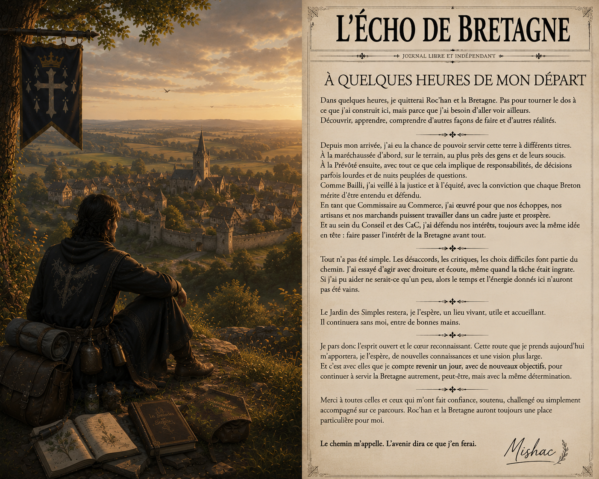

Chronique
À quelques heures du départ
Un regard personnel sur plusieurs années passées au service de la Bretagne.
Lire →Chroniques, nouvelles et regards sur les terres bretonnes
Après plusieurs années passées à servir la Bretagne, Mishac s'apprête à prendre la route. Entre responsabilités, rencontres, désillusions et nouvelles ambitions, il revient sur le chemin parcouru.
Lire l'article complet →
Les nouvelles, chroniques et récits de L'Écho de Bretagne
Un regard personnel sur plusieurs années passées au service de la Bretagne.
Lire →Une réflexion sur les départs et l'avenir des villes bretonnes.
Bientôt disponibleLes nouvelles terres et les nouvelles rencontres qui nourriront les prochaines éditions.
À suivreLes différents regards de L'Écho sur le monde
Les histoires personnelles et les événements qui méritent d'être racontés.
La vie quotidienne, les cités, les métiers et celles et ceux qui font vivre la Bretagne.
Les routes, les terres lointaines et les découvertes qui nourriront les prochaines éditions.
Par Mishac · L'Écho de Bretagne
Il paraît qu'un journaliste doit savoir rester objectif. Pourtant, à quelques heures de prendre la route, j'ai aujourd'hui envie de faire une exception et de raconter un peu mon propre chemin.
Non pas parce que mon histoire serait plus importante que celle des autres, mais parce qu'il est difficile de quitter une terre à laquelle on s'est attaché sans prendre un instant pour regarder le chemin parcouru et ce qu'il nous a appris.
Je suis arrivé à Roc'han avec l'envie de construire quelque chose et j'y ai ouvert Le Jardin des Simples, une petite échoppe consacrée aux plantes et aux remèdes.
J'y ai rencontré des habitants, des amis et des personnes de passage, découvrant peu à peu une ville et une terre auxquelles je me suis attaché.
La Bretagne, ce sont ses habitants : ceux qui travaillent, tiennent une échoppe, montent la garde, cultivent, voyagent, arrivent, restent et même ceux qui partent.
Puis sont venues les responsabilités et les différentes fonctions que j'ai eu l'occasion d'exercer au service de la Bretagne : la maréchaussée et la Prévôté, mais aussi les charges administratives et économiques comme celles de Bailli ou de Commissaire au Commerce.
Il y eut les conseils, les rapports, les nuits de garde, la gestion des affaires du Duché, les décisions à prendre et parfois les désaccords.
Je ne prétendrai pas que tout a été facile.
J'ai connu des moments où j'étais fier de servir cette terre, d'autres où je me suis demandé si cela en valait encore la peine.
J'ai parfois eu raison, certainement parfois eu tort, mais je n'ai jamais considéré ces fonctions comme un simple titre.
Dans quelques heures, je quitterai mes fonctions et prendrai la route.
Ce départ n'est ni une fuite ni une volonté d'effacer ce que j'ai construit ici ; j'ai simplement envie de découvrir autre chose, de voyager, d'apprendre, de rencontrer d'autres personnes et de voir comment vivent et s'organisent d'autres communautés.
Ce voyage doit surtout me permettre d'acquérir de nouvelles connaissances, de découvrir d'autres façons de vivre et de construire, et de faire mûrir les objectifs que je souhaite poursuivre à mon retour en Bretagne.
Ce que j'apprendrai ailleurs pourra peut-être un jour servir à nouveau à ceux et celles qui m'ont accompagné.
Alors oui, une page se tourne ! Mais l'histoire, elle, n'est pas terminée.
Je ne sais pas encore ce que les routes me réserveront, mais je sais que les expériences à venir façonneront mes choix et mes ambitions.
Retrouvez les anciennes éditions de L'Écho de Bretagne dans les archives du journal.
Consulter les archives →L'Écho de Bretagne est un journal libre et indépendant consacré à la vie des terres bretonnes, à leurs habitants et aux histoires qui méritent d'être conservées.
Chroniques, récits, témoignages et événements trouvent ici leur place afin de garder une trace de la vie du Duché et de ceux qui le font vivre.